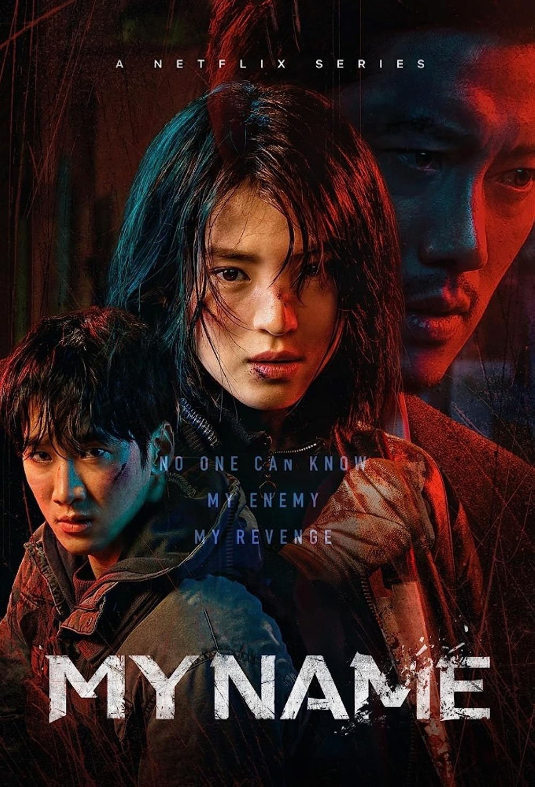
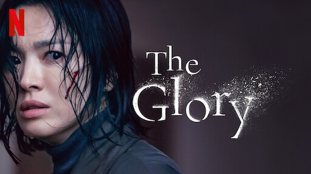
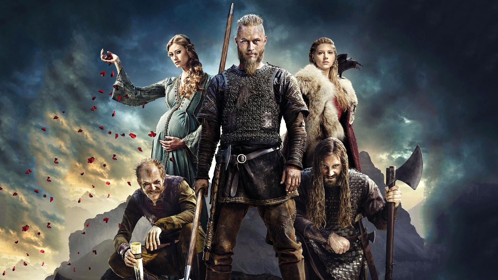
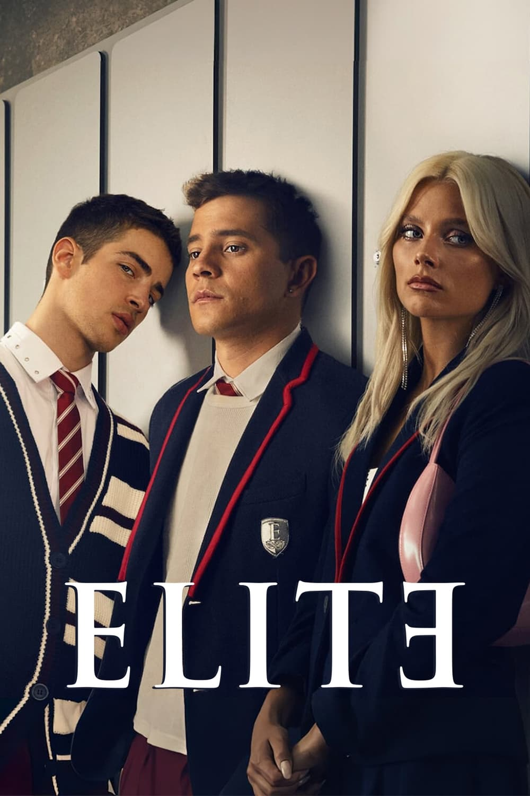
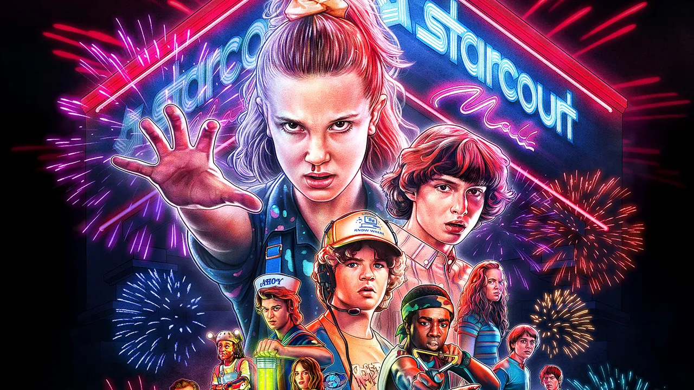
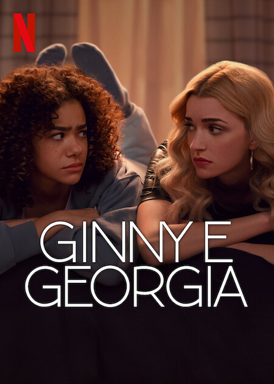
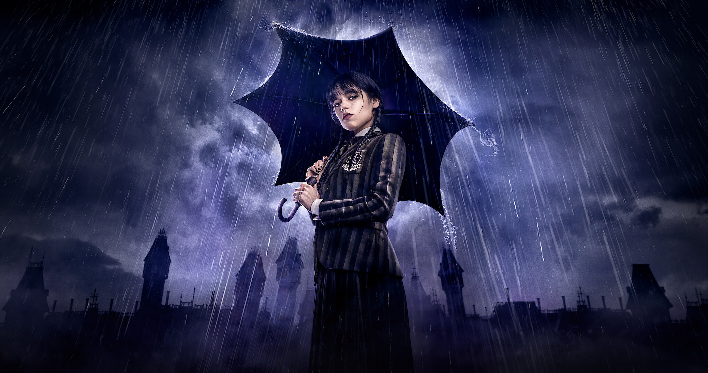
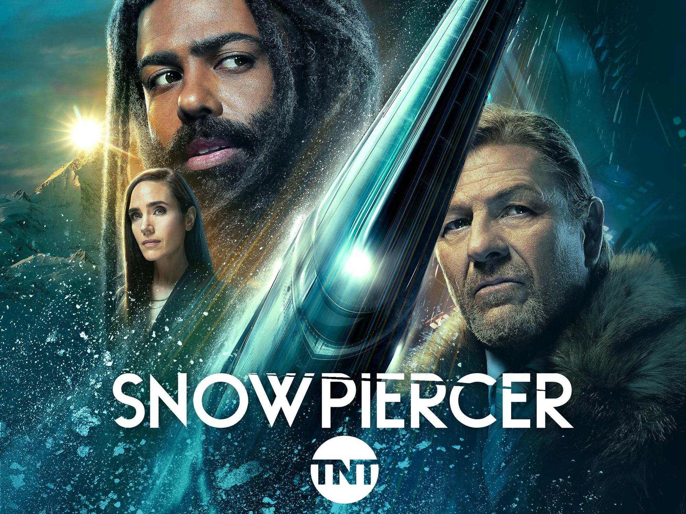

MY NAME
THE GLORY
VIKINGS
ELITE
STRANGER THINGS
GAME OF THRONES
GINNY & GEORGIA
WEDNESDAY
SNOWPIERCER
some popular web series that must be watch

The violent and suspenseful K-drama features a young, strong female anti-hero whose life as a mole is
driven
by revenge. Yoon Ji-woo's (Han So-hee) close relationship with her father (who was a notorious gangster)
and
the guilt she feels about his death are the driving forces behind her often morally ambiguous
actions.

The Glory is a South Korean television-series written and executive produced by Kim Eun-sook, who molds
a harrowing tale about a disfigured victim of high school
violence who carefully plots her revenge against those that have wronged her.

Vikings is a historical drama television series written and created by Michael Hirst for the History
channel. Vikings is inspired by the sagas of Viking Ragnar Lothbrok, one of the best-known legendary
Norse
heroes. The series portrays Ragnar's and his family's rise from serfdom to nobility and fame through
successful raids into Anglo-Saxon kingdoms and Francia.

The series is set in Las Encinas, a fictional elite high school and revolves around the relationships
between three working-class students enrolled at the school through a scholarship program and their
wealthy classmates.

Set in the fictional town of Hawkins, Indiana in the 1980s, the first season focuses on the
investigation into the disappearance of a young boy amid supernatural events occurring around the town
including the appearance of a psychokinetic girl who helps the missing boy's friends in their own
search.

Game of Thrones is an American fantasy drama television series created by David Benioff and D. B. Weiss
for HBO. It is an adaptation of A Song of Ice and Fire, a series of fantasy novels by George R. R.
Martin, the first of which is A Game of Thrones. The show premiered on HBO in the United States on April
17, 2011, and concluded on May 19, 2019, with 73 episodes broadcast over eight seasons.

Angsty, awkward 15-year-old Ginny Miller often feels more mature than her 30-year-old mother, the
irresistible, dynamic Georgia Miller. After years on the run, Georgia desperately wants to put down
roots in picturesque New England and give her family something they've never had: a normal
life.

The coming-of-age horror comedy is a spin-off of the Adamms Family. The show follows Wednesday
(Jenna Ortega) trying to make her way through high school while trying to master her psychic
abilities.

The series, a reboot of the film's continuity, follows the passengers of the Snowpiercer, a
gigantic, perpetually moving train that circles the globe carrying the remnants of humanity
seven years after the world becomes a frozen wasteland.